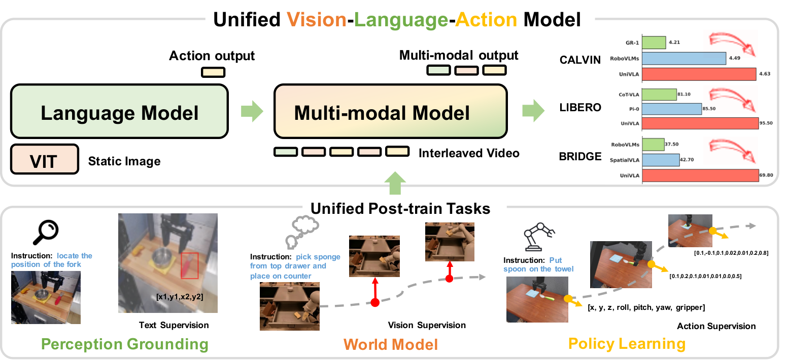
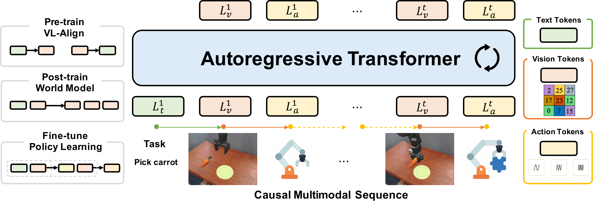
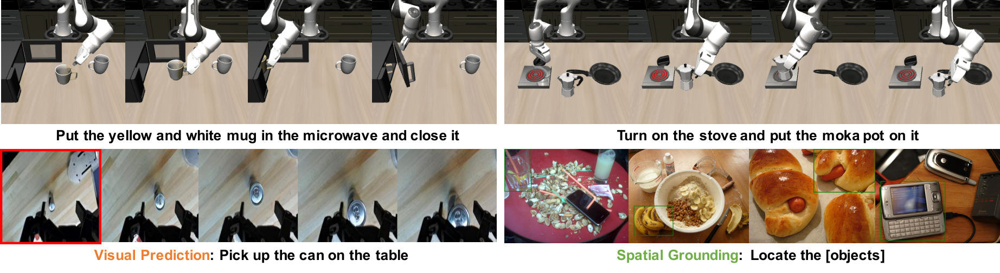
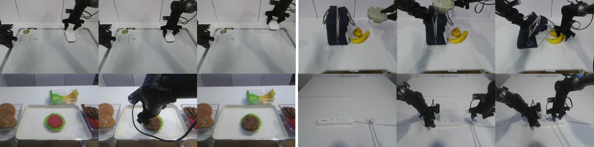

Unified Vision-Language-Action Model
1. 论文速览与证据链
一句话贡献
UniVLA 以 8.5B 自回归 Transformer 统一视觉、语言和 FAST 动作 token，在 62.2 万机器人视频上用 world-model 目标后训练，再以交错 vision-action 序列微调策略。
元数据与阅读定位
| 技术类型 | Unified autoregressive VLA and world model |
|---|---|
| 关键词 | UniVLA、autoregressive multimodal model、world-model post-training、FAST tokenizer、Emu3、CALVIN、LIBERO、SimplerEnv |
| 开源情况 | 论文公开；完整 8.5B 权重、数据处理和训练代码以项目发布为准 |
| 适合程度 | 很高：视觉、语言、动作统一 token 化并以 world-model post-training 强化长时域策略 |
从哪里开始读
Emu3 式 8.5B Transformer 接收离散视觉与语言 token；VQ 图像编码器压缩率为 8。动作采用相邻帧相对位移，经 1/99 percentile normalization 后进入 1024 词 FAST vocabulary。post-training 预测 vision tokens，fine-tuning 用两帧交错 vision-action 序列预测 action chunk。 阅读时先确认中间表示是否在部署端运行，再用主结果和消融判断它究竟改善了感知、动态预测还是动作生成。
图表证据链
| # | 原始图 | 支持的主张与边界 |
|---|---|---|
| 1 | 统一多模态建模概览 | 图中视觉、语言、动作序列进入同一 transformer，强调模型不依赖三个独立任务头。 |
| 2 | post-training 与 policy fine-tuning | 两阶段流程先以视频 world-model objective 塑造动态，再用交错 vision-action sequence 学习控制。 |
| 3 | 多任务定性结果 | 展示 CALVIN/LIBERO/SimplerEnv 等场景中的序列执行，支持统一模型跨平台使用，但不能替代量化表。 |
| 4 | 真实平台任务 | 真实 ALOHA 等任务帧说明动作 token 可解码执行；展示规模不足以建立鲁棒性结论。 |
2. 问题与动机
问题定义
多数 VLA 借用 VLM 的理解能力，却把视频因果结构压缩进独立动作头；多任务之间的表示和训练目标割裂。UniVLA 希望用同一序列模型同时预测视觉、语言和动作，使互联网/机器人视频的世界动态直接改善 policy learning。
现有路线为何不足
与 LAPA 的离散 latent action 不同，UniVLA 把 image token、language token 和 action token 置于同一词表和 next-token objective；与专用 video world model 不同，它把世界建模作为 post-training 阶段，最终仍是一个 VLA。
作者的解题假设
UniVLA 以 8.5B 自回归 Transformer 统一视觉、语言和 FAST 动作 token，在 62.2 万机器人视频上用 world-model 目标后训练，再以交错 vision-action 序列微调策略。 该假设只有在统一骨干、数据和评测下仍带来增益时才成立。
4. 方法、表示与训练
端到端信息流
Emu3 式 8.5B Transformer 接收离散视觉与语言 token；VQ 图像编码器压缩率为 8。动作采用相邻帧相对位移，经 1/99 percentile normalization 后进入 1024 词 FAST vocabulary。post-training 预测 vision tokens，fine-tuning 用两帧交错 vision-action 序列预测 action chunk。
核心表示
统一离散序列让视频 prediction 和动作 prediction 共用 transformer dynamics。FAST 占用语言 tokenizer 最后 1024 个 token id，避免新增解码器；代价是连续控制被量化，视觉 token 规模也显著增加上下文长度。
训练阶段与目标
world-model post-training 使用 62.2 万 robot-centric videos，训练 30k steps、batch 64，只在 vision token 上监督。policy fine-tuning 的 action chunk 为 10，cosine learning rate 从 8e-5 衰减，loss 仅计算 action tokens。
推理与部署路径
任务 prompt、历史图像和动作上下文被串成序列，模型自回归生成一段 FAST action tokens，再反量化执行。世界模型不单独 rollout；其作用已写入 transformer 权重，因此部署结构保持统一，但长序列推理仍可能较慢。
统一多模态建模概览

post-training 与 policy fine-tuning

5. 实验、结果与消融
数据集、任务与协议
评测覆盖 CALVIN 长时域、LIBERO 四套泛化和 SimplerEnv WidowX，并给出 ALOHA 与自动驾驶展示。CALVIN 报告连续完成任务长度，LIBERO 每 suite 500 episode，SimplerEnv 区分 grasp 和 full success。
主要定量结果
CALVIN ABCD→D 平均连续任务 4.63、ABC→D 为 4.41；LIBERO 平均 95.5%，其中 Long 94.0%，相对 CoT-VLA 69.0% 显著提高；SimplerEnv overall success 69.8%，高于此前 42.7% 水平。
消融与因果解释
论文比较不同 post-training 目标，world-model prediction 在下游性能和训练效率上最佳；结果说明视频 post-training 的收益不仅来自更多梯度步，而是因果视觉预测塑造的初始化。规模研究仍处早期，未覆盖更大模型/数据的稳定规律。
证据没有覆盖什么
从当前评测覆盖看，离散动作精度、长上下文计算和大规模 video token 成本是部署瓶颈；论文未充分证明统一词表优于连续 action expert。自动驾驶与 ALOHA 展示的评测深度低于三大操控 benchmark，强化学习整合也尚未完成。
多任务定性结果

真实平台任务

6. 复现路径与工程风险
最小可行复现
最小复现可用较小离散多模态模型：先在机器人视频上只预测下一视觉 token，再用 action chunk 微调，比较无 post-training 与 world-model post-training。完整 8.5B、62.2 万视频和 VQ token 长序列对显存与吞吐要求高。
验收标准
CALVIN ABCD→D 平均连续任务 4.63、ABC→D 为 4.41；LIBERO 平均 95.5%，其中 Long 94.0%，相对 CoT-VLA 69.0% 显著提高；SimplerEnv overall success 69.8%，高于此前 42.7% 水平。 复现时至少应恢复相同方向的增益，并报告同一随机种子、数据规模和延迟预算。
复现风险清单
| 环节 | 具体风险 |
|---|---|
| 数据 | 需取得论文列出的训练数据、相同切分与时间同步；未公开数据必须单列。 |
| 模型 | 需固定视觉/VLM 骨干、tokenizer 与动作头，避免把模型规模差异误判为方法收益。 |
| 训练 | 按论文阶段顺序复现，并保留无 latent/world objective 的严格对照。 |
| 评测 | 同时复现主指标、消融和失败类型；开环结果不能替代闭环安全。 |
| 硬件 | 最小复现可用较小离散多模态模型：先在机器人视频上只预测下一视觉 token，再用 action chunk 微调，比较无 post-training 与 world-model post-training。完整 8.5B、62.2 万视频和 VQ token 长序列对显存与吞吐要求高。 |
7. 分析、局限与边界
最有价值的贡献
综合方法与实验证据，UniVLA 以 8.5B 自回归 Transformer 统一视觉、语言和 FAST 动作 token，在 62.2 万机器人视频上用 world-model 目标后训练，再以交错 vision-action 序列微调策略。
作者结论的适用边界
将结论外推前需要保留以下边界：离散动作精度、长上下文计算和大规模 video token 成本是部署瓶颈；论文未充分证明统一词表优于连续 action expert。自动驾驶与 ALOHA 展示的评测深度低于三大操控 benchmark，强化学习整合也尚未完成。
可信的后续实验
驾驶场景可把多相机/BEV 未来 token 与轨迹 token 统一建模，但需要 block-wise decoding、并行 action chunk 和 safety verifier 控制延迟。应比较 unified token 与共享 backbone+专用 head 在同算力下的闭环收益。
8. 组会问答与阅读结论
Q1. UniVLA 的 unified 体现在哪里？
A：视觉、语言和动作都离散为 token，并由同一自回归 Transformer 建模。
Q2. world model 如何帮助策略？
A：先用 62.2 万视频预测 vision token，学习动态后再微调 action token。
Q3. 关键长时域结果？
A：CALVIN ABCD→D 平均 4.63，LIBERO-Long 94.0%。
Q4. FAST 的作用？
A：把连续动作压缩成 1024 词离散序列，复用语言解码接口。
Q5. 最大部署风险？
A：视频 token 上下文和自回归动作解码带来的延迟与量化误差。
我的阅读笔记
结合本批论文的比较，我的后续关注点是：驾驶场景可把多相机/BEV 未来 token 与轨迹 token 统一建模，但需要 block-wise decoding、并行 action chunk 和 safety verifier 控制延迟。应比较 unified token 与共享 backbone+专用 head 在同算力下的闭环收益。